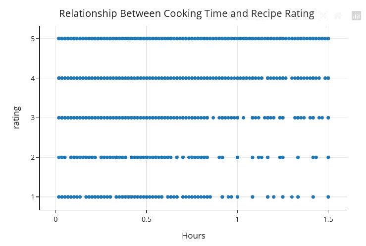
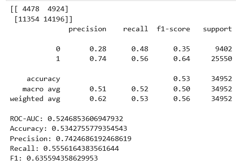
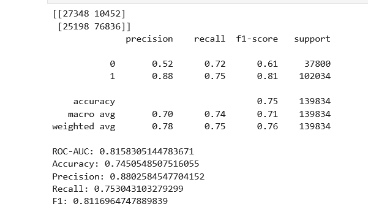

Introduction
Our dataset comes from food.com and consists of two files: a recipes dataset (83, 782 recipes) and an interactions dataset (731, 927 user reviews and ratings). Each recipe includes metadata like cooking time, number of steps, ingredients, tags, and nutritional information. Each interaction is one user reviewing one recipe with a 1-5 star rating and a txt review.
Our central question is: Can we predict whether a user will give a recipe a 5-star rating based on their review text and recipe characteristics? We think it is worth exploring because it could help recipe authors figure out what makes people love their recipes, and it could help food.com recommend better content to users.
Dataset
Relevant Columns
| Column | Description |
|---|---|
| rating | Star rating from 1-5 (0 means no rating was given) |
| review | Text written by the user about the recipe |
| minutes | Total time required to make the recipe (in minutes) |
| tags | food.com tags used to categorize the recipe |
| n_ingredients | Number of ingredients in the recipe |
| n_steps | Number of steps in the recipe |
| nutrition | Nutritional information for the recipe[calories, total_fat, sugar, protein, saturated_fat, carbohydrates] |
| description | Recipe description written by the contributor |
Data Cleaning
1. Merging the datasets
We merged the recipes and interactions datasets using a left join to retain all recipes, even those without review activity. This produced a merged dataset of 234,429 rows.
merged = recipes.merge(
interactions,
how="left",
left_on="id",
right_on="recipe_id"
)2. Replacing 0 ratings with missing values
A rating of 0 does not mean zero stars, it means the user interacted but chose not to rate. We replaced all 0 ratings with NaN so they would not drag down averages or distort our analysis.
merged["rating"] = merged["rating"].replace(0, np.nan)3. Computing Average Rating per Recipe
We computed the mean rating across all reviews for each recipe and merged it back as avg_rating.
avg_rating = merged.groupby('id')['rating'].mean().rename('avg_rating')
merged = merged.merge(avg_rating, on='id', how='left')
4. Expanding the Nutrition Column
The nutrition column was stored as a string like '[138.4, 10.0, 50.0, ...]'. We parsed it into an actual list and split it into 7 separate columns: calories, total_fat, sugar, sodium, protein, saturated_fat, and carbohydrates.
merged['nutrition'] = merged['nutrition'].apply(
lambda s: ast.literal_eval(s) if isinstance(s, str) else s
)
nutrient_cols = ['calories', 'total_fat', 'sugar', 'sodium', 'protein', 'saturated_fat', 'carbohydrates']
def ensure7(x):
return x if isinstance(x, list) and len(x) == 7 else [np.nan] * 7
merged[nutrient_cols] = pd.DataFrame(
merged['nutrition'].apply(ensure7).tolist(),
columns=nutrient_cols,
index=merged.index
)
merged = merged.drop(columns=['nutrition'])
Parsing Tags and Ingredients
The tags and ingredients columns were stored as strings that look like Python lists. We used ast.literal_eval() to convert them into actual lists.
merged['tags'] = merged['tags'].apply(
lambda x: ast.literal_eval(x) if isinstance(x, str) else x
)
merged['ingredients'] = merged['ingredients'].apply(
lambda x: ast.literal_eval(x) if isinstance(x, str) else x)
6. Extracting Meal Type from Tags
After exploring the most common tags, we found meal-related tags like desserts, dinner-party, breakfast, lunch, and snacks. We wrote a function to classify each recipe into a meal category.
def get_meal_type(tags):
if not isinstance(tags, list):
return 'other'
tags_lower = [t.lower() for t in tags]
if any('dessert' in t for t in tags_lower): return 'dessert'
if any('breakfast' in t for t in tags_lower): return 'breakfast'
if any('lunch' in t for t in tags_lower): return 'lunch'
if any('dinner' in t for t in tags_lower): return 'dinner'
if any('snack' in t for t in tags_lower): return 'snack'
return 'other'
merged['meal_type'] = merged['tags'].apply(get_meal_type)7. Creating Review Length
We computed the character length of each review. This captures how much detail a reviewer wrote.
merged['review_length'] = merged['review'].str.len()
Exploratory Data Analysis
Distribution of Ratings
Ratings are heavily left-skewed, most reviews are 4 or 5 stars.
fig = px.histogram(merged.dropna(subset=['rating']), x='rating',
title='Distribution of Ratings', nbins=5)
fig.update_layout(xaxis_title='Rating', yaxis_title='Count')
fig.show()
Distribution of Review Lengths
Review length is right-skewed. Most reviews are short, but there is a long tail of very detailed reviews.
Review Length by Rating
Lower-rated reviews tend to be longer, which tells us that unhappy users are more likely to explain what went wrong. 5-star reviews are often short.
Cooking Time vs Rating
No clear relationship between cooking time and rating. Recipes of all lengths get the full range of ratings.
Grouping Recipes by Ingredient Count
Ratings stayed around 4.7 no matter the ingredient count, which told us that knowing how many ingredients a recipe has won't alone help us predict whether someone gives it 5 stars.
merged['ingredient_group'] = pd.cut(
merged['n_ingredients'], bins=[0, 5, 10, 15, 20, 50],
labels=['1-5', '6-10', '11-15', '16-20', '21+']
)
(merged
.groupby('ingredient_group', observed=True)
[['rating', 'minutes', 'n_steps', 'review_length']]
.mean()
.round(2)
)
Recipe Modification Analysis
When we looked at the most common words in reviews, "added" and "instead" appeared in 39,255 and 20,339 reviews. So we checked for other modification-related words like "substituted", "replaced", "swapped", and "omitted" and found that they show up pretty often too. Reviewers who modify recipes tend to write longer reviews but give similar ratings to non-modifiers. We turned this into a feature called is_modifier for our model.
modification_words = [
'substituted', 'replaced', 'swapped', 'switched',
'added', 'omitted', 'left out', 'instead of', 'modified',
'adjusted', 'changed', 'tweaked', 'doubled', 'halved',
'reduced', 'increased'
]
def has_modification(text):
if not isinstance(text, str):
return False
text_lower = text.lower()
return any(word in text_lower for word in modification_words)
merged['is_modifier'] = merged['review'].apply(has_modification)
Assessment of Missingness
NMAR Analysis
We believe the rating column is NMAR (Not Missing At Random). The missingness is likely tied to the rating value itself, where users who felt indifferent are less likely to leave a rating, while users with strong opinions are more motivated to rate.
To make this MAR, we would need additional data on user engagement — for example, time spent on the recipe page or the user's rating history.
Missingness Dependency Tests
We tested whether the missingness of the description column depends on other columns.
merged['desc_missing'] = merged['description'].isna()
print(f'missing descriptions: {merged["desc_missing"].sum()}')
Test 1: Description Missingness -- Number of Ingredients
We compared what the distribution of n_ingredients looks like for recipes that have descriptions vs recipes that don't.
The distributions looked different, so we ran a permutation test to check if the difference was statistically significant. We shuffled the missingness labels 1000 times and compared the difference in means each time to what we actually observed.
observed_stat = merged.groupby('desc_missing')['n_ingredients'].mean().diff().iloc[-1]
print(f'Observed difference: {observed_stat:.4f}')
n_reps = 1000
shuffled_stats = []
for _ in range(n_reps):
shuffled = np.random.permutation(merged['desc_missing'])
diff = merged.assign(desc_missing=shuffled).groupby('desc_missing')['n_ingredients'].mean().diff().iloc[-1]
shuffled_stats.append(diff)
p_value = np.mean(np.abs(shuffled_stats) >= np.abs(observed_stat))
print(f'p-value: {p_value}')
The observed difference in means was -1.1335 and the p-value was 0.001. Since p < 0.05, we reject the null hypothesis, meaning that description missingness does depend on n_ingredients. Recipes with fewer ingredients are more likely to skip the description.
Test 2: Description Missingess -- Minutes
We ran the same test but with minutes instead of n_ingredients to see if cooking time has anything to do with whether a recipe has a description.
observed_stat_min = merged.groupby('desc_missing')['minutes'].mean().diff().iloc[-1]
print(f'Observed difference: {observed_stat_min:.4f}')
n_reps = 1000
shuffled_stats_min = []
for _ in range(n_reps):
shuffled = np.random.permutation(merged['desc_missing'])
diff = merged.assign(desc_missing=shuffled).groupby('desc_missing')['minutes'].mean().diff().iloc[-1]
shuffled_stats_min.append(diff)
p_value_min = np.mean(np.abs(shuffled_stats_min) >= np.abs(observed_stat_min))
print(f'p-value: {p_value_min}')
The observed difference was -42.28 and the p-value was about 0.47. Since p > 0.05, we fail to reject the null, meaning that description missingness does not depend on minutes. Whether a recipe has a description has nothing to do with how long it takes to cook.
Hypothesis Testing
We tested whether quick recipes (30 minutes or less) receive different average ratings than longer recipes.
Null Hypothesis
The average rating of quick recipes and longer recipes are the same.
Alternative Hypothesis
The average rating of quick recipes and longer recipes are different.
Test Setup
We used the absolute difference in mean rating as our test statistic with α = 0.05. We performed a permutation test by shuffling labels 1000 times.
rated = merged.dropna(subset=['rating']).copy()
rated['is_quick'] = rated['minutes'] <= 30
group_means = rated.groupby('is_quick')['rating'].mean()
observed_diff = abs(group_means[True] - group_means[False])
n_reps = 1000
perm_diffs = []
for _ in range(n_reps):
shuffled_labels = np.random.permutation(rated['is_quick'])
means = rated.assign(is_quick=shuffled_labels).groupby('is_quick')['rating'].mean()
perm_diffs.append(abs(means[True] - means[False]))
p_value = np.mean(np.array(perm_diffs) >= observed_diff)

Results
Quick recipes had an average rating of 4.6985 and longer recipes had 4.6638, so the observed difference was only about 0.035. We got a p-value of 0.0, so we reject the null hypothesis. Cooking time and ratings are not independent.
Framing a Prediction Problem
We frame this as a binary classification problem: predict whether a review gives a 5-star rating (is_five_star = 1) or not (is_five_star=0).
model_df = merged.dropna(subset=['rating', 'review']).copy()
model_df['is_five_star'] = (model_df['rating'] == 5).astype(int)
Response Variable
We're predicting is_five_star, which is 1 if the rating is exactly 5 and 0 otherwise. We chose this because 5 stars represents the strongest level of satisfaction, and it gives us a cleaner question than trying to predict the exact 1-5 rating.
Evaluation Metric
We use F1-score instead of accuracy because about 77% of reviews are 5 stars. A model that just predicts 5 stars every time would get 77% accuracy without learning anything useful. F1 balances precision and recall, so it actually measures whether the model is doing something meaningful.
Features at Time of Prediction
We assume the review text has already been written and we want to infer the star rating. This makes sense for cases where a platform receives text reviews without structured ratings. We do not use the numeric rating as a feature since that is what we are trying to predict.
Baseline Model
Features
Our baseline uses 5 quantitative features (n_steps, n_ingredients, minutes, calories, review_length) and 1 nominal feature (meal_type). No ordinal features.
baseline_num = ['n_steps', 'n_ingredients', 'minutes', 'calories', 'review_length']
baseline_cat = ['meal_type']Pipeline
Quantitative features are standardized with StandardScaler. The nominal feature is one-hot encoded with OneHotEncoder(drop='first'). All in a single sklearn Pipeline.
baseline_preproc = ColumnTransformer(transformers=[
('num', StandardScaler(), baseline_num),
('cat', OneHotEncoder(drop='first', handle_unknown='ignore'), baseline_cat),
])
baseline_pl = make_pipeline(
baseline_preproc,
LogisticRegression(max_iter=1000, class_weight='balanced')
)
baseline_pl.fit(X_train, y_train)
Evaluation
The baseline achieved an F1-score of 0.6630 and accuracy of 0.5503. Precision was 0.79 but recall only 0.57, which means the model misses 43% of true 5-star reviews. Which is why we needed to add more features, to improve these metrics.

Final Model
Engineered Features
We added 5 new features, each justified by the data generating process:
- exclamation_count: Number of "!" (captures enthusiasm).
- word_count: Number of words (shows different writing styles).
- sentiment: Positive words minus negative words, built from word frequency analysis.
- is_modifier: Whether the reviewer modified the recipe (from our EDA).
- steps_per_ingredient: Complexity ratio of steps to ingredients.
model_df['exclamation_count'] = model_df['review'].str.count('!')
model_df['word_count'] = model_df['review'].str.split().str.len()
model_df['is_modifier'] = model_df['review'].apply(has_modification).astype(int)
model_df['steps_per_ingredient'] = model_df['n_steps'] / model_df['n_ingredients'].replace(0, 1)
positive_words = ['loved', 'great', 'amazing', 'delicious', 'perfect',
'excellent', 'wonderful', 'best', 'favorite', 'fantastic', 'awesome']
negative_words = ['bland', 'terrible', 'awful', 'bad', 'disappointed',
'dry', 'gross', 'worst', 'tasteless', 'horrible', 'disgusting']
model_df['sentiment'] = (
model_df['review'].apply(lambda x: count_words(x, positive_words))
- model_df['review'].apply(lambda x: count_words(x, negative_words))
)
We also added TF-IDF text features from the review via TfidfVectorizer.
Trying Multiple Algorithms
We compared four algorithms using 5-fold cross-validation:
preproc = ColumnTransformer(transformers=[
('num', StandardScaler(), num_final),
('text', TfidfVectorizer(max_features=5000, ngram_range=(1, 2)), 'review'),
('cat', OneHotEncoder(drop='first', handle_unknown='ignore'), ['meal_type']),
])
| Model | Mean CV F1 |
|---|---|
| LogisticRegression | 0.9116 |
| LinearSVC | 0.9105 |
| MultinomialNB | 0.9013 |
| RandomForestClassifier | 0.8829 |
We selected LogisticRegression as our final model.
Hyperparameter Tuning
We used GridSearchCV with 5-fold CV to tune three hyperparameters:
- C (0.1, 0.5, 1.0): Regularization strength.
- max_features (3000, 5000): TF-IDF vocabulary size.
- ngram_range ((1,1) vs. (1,2)): Unigrams only vs unigrams + bigrams.
params = {
'columntransformer__text__max_features': [3000, 5000],
'columntransformer__text__ngram_range': [(1, 1), (1, 2)],
'logisticregression__C': [0.1, 0.5, 1.0],
}
gs = GridSearchCV(final_pl, param_grid=params, cv=5, scoring='f1', n_jobs=-1)
gs.fit(X_train, y_train)
Best hyperparameters: C=0.5, max_features=5000, ngram_range=(1,2).
Performance Comparison
| Metric | Baseline | Final Model |
|---|---|---|
| F1-Score | 0.6630 | 0.9122 |
| Accuracy | 0.5503 | 0.8578 |
| Precision (5-star) | 0.79 | 0.87 |
| Recall (5-star) | 0.57 | 0.95 |
The final model catches 95% of true 5-star reviews with 87% precision. Comparing the results to the baseline model, it tells us how important TF-IDF text features for improving model performance.

Fairness Analysis
We investigated whether our model performs equally well for simple recipes vs complex recipes.
Setup
- Group X: Simple recipes: n_ingredients ≤ median
- Group Y: Complex recipes: n_ingredients > median
- Metrics: Precision
- Null Hypothesis: Precision is the same for both groups.
- Alternative Hypothesis: Precision differs between groups.
- Significance level: α = 0.05
med_ingredients = X_test['n_ingredients'].median()
is_complex = (X_test['n_ingredients'] > med_ingredients).values
prec_simple = precision_score(y_test[~is_complex], final_pred[~is_complex])
prec_complex = precision_score(y_test[is_complex], final_pred[is_complex])
observed_diff = abs(prec_simple - prec_complex)
n_reps = 1000
perm_diffs = []
for _ in range(n_reps):
shuffled = np.random.permutation(is_complex)
p_s = precision_score(y_test[~shuffled], final_pred[~shuffled])
p_c = precision_score(y_test[shuffled], final_pred[shuffled])
perm_diffs.append(abs(p_s - p_c))
p_value = np.mean(np.array(perm_diffs) >= observed_diff)
Results
We got a precision of 0.8774 for simple recipes and 0.8710 for complex recipes, which is only a 0.0034 difference. After running the permutation test, we got a p-value of 0.348, which is well above 0.05. So we fail to reject the null hypothesis, meaning our model seems to perform about the same for both groups.
Conclusion
Our hypothesis test showed that cooking time has almost no real effect on ratings, which told us early on that basic recipe metadata wouldn't be enough to predict 5-star reviews. The baseline model confirmed this, with just numeric features and meal type, we only got an F1 of 0.6630.
Once we added review text through TF-IDF and engineered features like sentiment, exclamation count, and our modifier flag from EDA, the final model jumped to an F1 of 0.9122. The biggest takeaway is that what people write matters way more than the recipe itself when it comes to predicting whether they gave 5 stars.
Our fairness analysis also showed that the model performs about the same for both simple and complex recipes, which means this model is not biased towards one type of recipe, and can equally predict if a recipe will receive 5 stars regardless of its complexity.